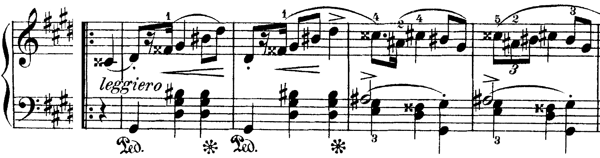
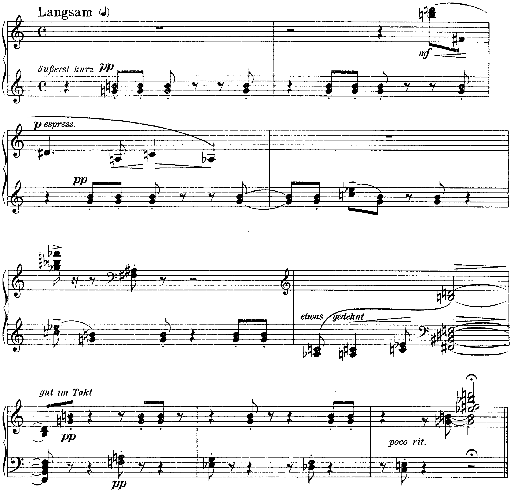

Lo stesso tipo di accordo, quattro suoni a distanza di tono e di tritono, in una mazurka di Chopin del 1830 circa e in un pezzo di Schönberg del 1911: nel primo ha una direzione, nel secondo no.
in una forma esattamente corrispondente a una sesta francese, che risolve però sulla tonica e non sulla dominante
D. D’Urso, C. Bertolini, Il linguaggio della musica, 5° anno, p. 61
A4Altre armonie dissonanti: l’alterazione del V, p. 61; B4 il sistema esatonale, p. 248 · D. D’Urso, C. Bertolini, Il linguaggio della musica, 5° anno.
Sesta francese. Accordo di sesta eccedente formato dal VI grado abbassato al basso, dal I, dal II e dal IV alzato (in sol♯ minore: mi–sol♯–la♯–do𝄪); la sesta eccedente mi–do𝄪 si apre sull’ottava della dominante (re♯).
Settima di dominante con la quinta diminuita. Gli stessi suoni, scritti mi–sol♯–si♭–re, sono la settima di dominante di la con la quinta abbassata; in secondo rivolto «in una forma esattamente corrispondente a una sesta francese, che risolve però sulla tonica e non sulla dominante» (D’Urso, Bertolini, p. 61).
Il tetracordo per toni interi. Ordinati a partire dal re (do𝄪), re–mi–sol♯–la♯, i quattro suoni sono separati da tono, terza maggiore e tono, e appartengono tutti a una scala esatonale (p. 248). Trasportato di un tritono, l’accordo ridà gli stessi suoni: per questo ammette due letture, e non quattro come la settima diminuita (U6 L4).
Dare il nome dell’accordo prima di aver guardato dove va. L’ortografia (do𝄪 o re, la♯ o si♭) dichiara un’intenzione; la risoluzione la conferma o la smentisce. L’analisi registra entrambe, e se non concordano lo scrive.

La seconda sezione della mazurka comincia in levare sul do𝄪4 e per due battute alterna, sopra il sol♯2 del basso, la triade di sol♯ maggiore (sol♯–si♯–re♯) della sinistra e una destra che ne arpeggia i suoni, con il fa𝄪, sensibile del sol♯, in levare di semicroma: è la dominante di do♯ minore, tenuta per due battute. Alla b. 19 il basso sale a mi3 e la sinistra forma con la voce interna (la♯3, minima accentata) e con la destra (do𝄪5) l’accordo mi–sol♯–la♯–do𝄪. Rispetto a sol♯ è una sesta francese: VI abbassato, I, II, IV alzato. Sul secondo movimento il basso scende a re♯3, e con fa𝄪3, la♯3 e il do♯5 della destra si forma la settima su re♯, dominante di sol♯; sul terzo il la♯ interno scende a sol♯3 e il basso tocca sol♯2.
L’ortografia di Chopin dichiara la lettura come sesta eccedente: il do𝄪 è la sensibile della dominante re♯, e dovrebbe salire. Invece scende, a do♯5, e diventa la settima dell’accordo seguente; il mi del basso scende anch’esso di semitono, a re♯. Così le due voci della sesta eccedente non si aprono sull’ottava ma si muovono parallelamente verso il basso, e l’accordo funziona come una sonorità cromatica di passaggio fra due posizioni della stessa regione dominante. La successione si ripete identica alla b. 20, con la terzina che riempie il primo movimento, e una terza volta alla b. 23, dopo il ritorno delle bb. 17–18 (bb. 21–22, con il basso raddoppiato all’ottava sotto alla b. 21); la b. 24, calando, lascia la sola destra sul sol♯ in ottave.
Nella Kammersymphonie (U6 L8) la sonorità della b. 3, sol♭–do–mi–si♭–la♭, contiene do–mi–sol♭–si♭: lo stesso tipo di accordo della mazurka, un tono sopra. Lì Schönberg lo conduce come una dominante di fa con la quinta abbassata: sol♭ scende a fa, si♭ scende a la, mi sale a fa, il do resta, e la b. 4 è una triade di fa maggiore. È la lettura del libro di testo, la settima di dominante con la quinta diminuita che «risolve sulla tonica» (p. 61), dentro un collegamento che comincia con un accordo per quarte.
Il confronto fra le tre occorrenze mostra il punto della lezione. Gli intervalli fra i suoni sono gli stessi; cambia ciò che l’accordo fa. In Chopin una delle due letture possibili (sesta francese) è scritta e la condotta delle parti ne propone un’altra (accordo cromatico di passaggio verso la settima su re♯); nell’op. 9 la lettura è quella di dominante, ma l’accordo esatonale di cui il tetracordo fa parte viene da un accordo per quarte; nell’op. 19 n. 2, come si vedrà, il tetracordo non ha né preparazione né risoluzione.

Il pezzo è costruito su una sola figura, la terza maggiore sol4–si4 della sinistra, äußerst kurz e pp, che ricorre in quasi ogni battuta e chiude il pezzo tenuta (b. 9). In un contesto tonale sol–si sarebbe il nucleo della dominante di do; qui la risoluzione su do non arriva (il do compare soltanto in terze di passaggio, do4–mi♭4, do5–mi♭5, do3–mi3), e la terza resta un punto fisso di registro intorno al quale si dispongono gli altri eventi: una melodia grave della destra (re♯4–la3–do4–la♭3, b. 3), accordi isolati nel registro acuto (si5–re6, b. 2; sol♭5–si♭5–fa♭6, b. 5), terze parallele e accordi gravi della sinistra (bb. 6–9).
Al primo movimento della b. 5 la sinistra suona do5–mi♭5 e la destra, arpeggiato, sol♭5–si♭5–fa♭6: fra i cinque suoni stanno do–fa♭–sol♭–si♭, cioè enarmonicamente do–mi–fa♯–si♭, il tetracordo per toni interi della sesta francese, nella stessa trasposizione dell’op. 9 (do–mi–sol♭–si♭) e un tono sopra quello di Chopin. Ma qui l’accordo non è preparato né risolto: dura una semicroma, il suo mi♭ gli toglie la purezza esatonale, e l’ottavo seguente porta fa♯3–la♯3 sotto la terza sol–si, due terze maggiori a distanza di semitono. L’ultima battuta sovrappone a sol–si–mi♭ (b. 9, la terza con il mi♭5 della destra) re–fa♯–si♭: due triadi eccedenti, ciascuna tratta da una delle due scale esatonali: sei suoni senza alcuna gerarchia.
| Chopin, op. 6 n. 2, b. 19 | Schönberg, op. 9, b. 3 | Schönberg, op. 19 n. 2, b. 5 | |
|---|---|---|---|
| Suoni | mi–sol♯–la♯–do𝄪 | do–mi–sol♭–si♭ (con la♭) | do–fa♭–sol♭–si♭ (con mi♭) |
| Ortografia | sesta francese di sol♯ | settima su do con quinta abbassata | nessuna lettura per terze |
| Preparazione | dalla dominante di do♯, basso sol♯–mi | dall’accordo per quarte, per semitoni | nessuna |
| Continuazione | settima su re♯, per semitoni discendenti | fa maggiore, per semitoni | fa♯–la♯ sotto sol–si |
| Durata | un movimento, tre volte | una battuta lenta | una semicroma |
In tutti e tre i casi l’insieme dei suoni è lo stesso; ciò che determina l’identità dell’accordo è il contesto, cioè la preparazione, la continuazione e la durata. Nella mazurka il contesto tonale è così forte che l’accordo si lascia nominare con precisione, anche se la sua condotta smentisce in parte il nome; nell’op. 19 n. 2 il contesto non contiene più funzioni, e l’accordo si descrive soltanto con i suoi intervalli e con la sua posizione nel registro e nel tempo. È la soglia che l’unità 7 attraversa con l’analisi per insiemi.
Cifrare con i gradi l’accordo della b. 5 dell’op. 19 n. 2, come se fosse una sesta francese. I suoni sono quelli; la funzione no. Si scrive che il pezzo contiene il tetracordo della sesta francese e che non lo usa come tale.
Bb. 1–4 in sol♯ minore: sesta francese, dominante, settima di dominante, tonica; bb. 5–8 in la maggiore: settima di mi con la quinta diminuita, tonica, settima di dominante, tonica. Le alterazioni dell’accordo si muovono per semitono nella direzione che l’ortografia indica; niente quinte e ottave parallele.
Il tetracordo per toni interi della sesta francese compare nella mazurka (mi–sol♯–la♯–do𝄪, bb. 19, 20, 23), dove la condotta lo porta per semitoni discendenti alla settima su re♯; nell’op. 9 (do–mi–sol♭–si♭, b. 3), dove risolve come dominante; nell’op. 19 n. 2 (do–fa♭–sol♭–si♭, b. 5), dove dura una semicroma e non va da nessuna parte, accanto alla terza ostinata sol–si.
L’identità di un accordo dipende dal contesto: preparazione, continuazione, durata, ortografia. Lo stesso insieme di suoni può avere una funzione precisa, una funzione smentita dalla condotta delle parti, o nessuna funzione; l’analisi dice quale dei tre casi ha davanti.
La lezione si chiude con il solfeggio: si cantano a quattro parti le bb. 1–2 e 5–6 della soluzione, poi la terza sol–si con la melodia re♯–la–do–la♭ dell’op. 19 n. 2. La lezione seguente analizza l’inizio della Sonata op. 1 di Berg, l’ultima dell’unità prima della V4.
Compiti per la prossima volta
Sul basso dato scrivi le altre tre parti, otto battute: bb. 1–4 in do minore (sesta francese la♭–do–re–fa♯, V, V7, i); bb. 5–8 gli stessi suoni scritti la♭–do–mi𝄫–sol♭, come settima di la♭ con la quinta diminuita, verso re♭ maggiore (I, V7, I).
Sotto ogni battuta il grado e la specie dell’accordo. In due righe: in quale battuta chi ascolta capisce che la b. 5 non è più una sesta francese.
Sul quaderno, a matita. La foto del lavoro finito va su Classroom. Nel Workbook: apri l’esercizio C5-U6-L12-05 ↗
Compiti per la prossima volta
Ogni pezzo a tempo, senza fermarti: il parlato a nomi, il cantato prendendo il primo suono dalla tastiera, il ritmico battendo la pulsazione.
Scrivi la linea del basso sul quaderno, in chiave di basso: otto battute in 9/8, la maggiore. Il primo suono è do♯. Prima il riferimento, poi tutto due volte, ogni coppia di battute due volte, il collegamento 1–4, 3–6 e 5–8, e tutto per controllare.
Il riferimento: accordo di tonica e primo suono
Il dettato · otto battute
Le sezioni (riferimento, tutto, le coppie, il collegamento) si ascoltano una per una e si ripetono quanto serve; le fasi fanno la procedura della classe, con gli annunci e le pause, da qualunque punto.
Sul quaderno scrivi in testa la sigla C5-D-U06-L12. Si corregge all’inizio della prossima lezione.
Compiti per la prossima volta
Scrivi un contrappunto di quinta specie (il contrappunto fiorito) sopra il canto fermo, in modo misolidio (finale sol): dieci battute. Comincia su una consonanza perfetta, alla cadenza la sensibile sale alla finale, niente quinte e ottave consecutive.
Sul quaderno, con la sigla C5-CP-U06-L12 in testa; la foto va su Classroom.
Realizza a quattro parti il basso senza numeri: sedici battute in 4/4, re minore. Trova tu l’accordo di ogni nota (la regola dell’ottava è il punto di partenza) e scrivilo sotto; poi il soprano, poi le voci interne. Accordi che puoi usare: tutto quello studiato, e una modulazione a un tono vicino. Il basso modula: trova dove, e in quale tonalità arriva.
Sul quaderno, con la sigla C5-BD-U06-L12 in testa; la foto va su Classroom.
Armonizza a quattro parti il canto dato: sedici battute in 4/4, sol minore. Prima le cadenze, poi il basso per intero, e solo alla fine contralto e tenore. Accordi che puoi usare: tutto quello studiato, e una modulazione a un tono vicino. La melodia modula: trova dove, e in quale tonalità arriva.
Sul quaderno, con la sigla C5-CD-U06-L12 in testa; la foto va su Classroom.
Scritto: Lo stesso accordo, due ortografie, otto battute (Workbook, esercizio C5-U6-L12-05), sul quaderno; la foto va su Classroom. Solfeggio dal quaderno di lettura: cantato n. 366, 367 (a tempo, senza fermarsi). Dettato C5-D-U06-L12 dalla pagina della lezione (sezioni da ascoltare, o le fasi della procedura guidata), sul quaderno con la sigla. Contrappunto di quinta specie sul canto fermo (C5-CP-U06-L12). Basso senza numeri da realizzare a quattro parti (C5-BD-U06-L12). Canto dato da armonizzare a quattro parti (C5-CD-U06-L12).
In classe
Si prende il tono dalla tastiera, si canta insieme; poi a gruppi.
Apri il n. 364 nel quaderno di lettura ↗ chiave di violino · 2/4 · sol maggiore
Apri il n. 365 nel quaderno di lettura ↗ chiave di violino · 4/4 · si♭ maggiore